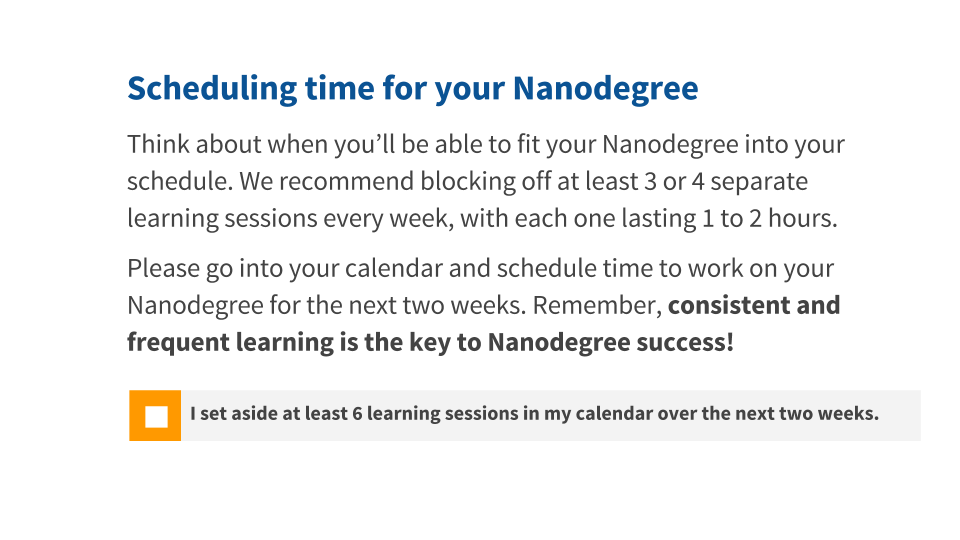

08. How Do I Find Time for My Nanodegree?
How Do I Find Time for My Nanodegree Program?
Question:
Start Quiz:

All calendar applications now let you set up a weekly reminder. I have included a screen capture below of how to set one up in Google Calendar. We recommend coming into the classroom at least twice a week. It is a best practice to set up at least one repeating weekly reminder to continue the Nanodegree program.